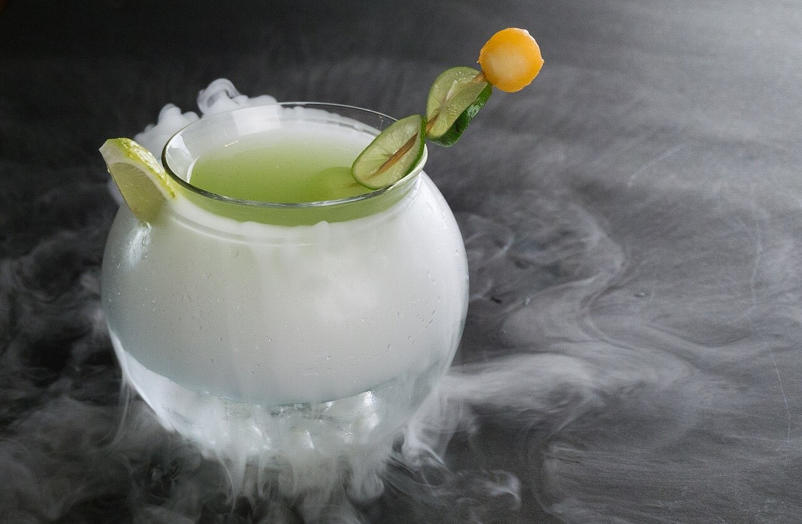
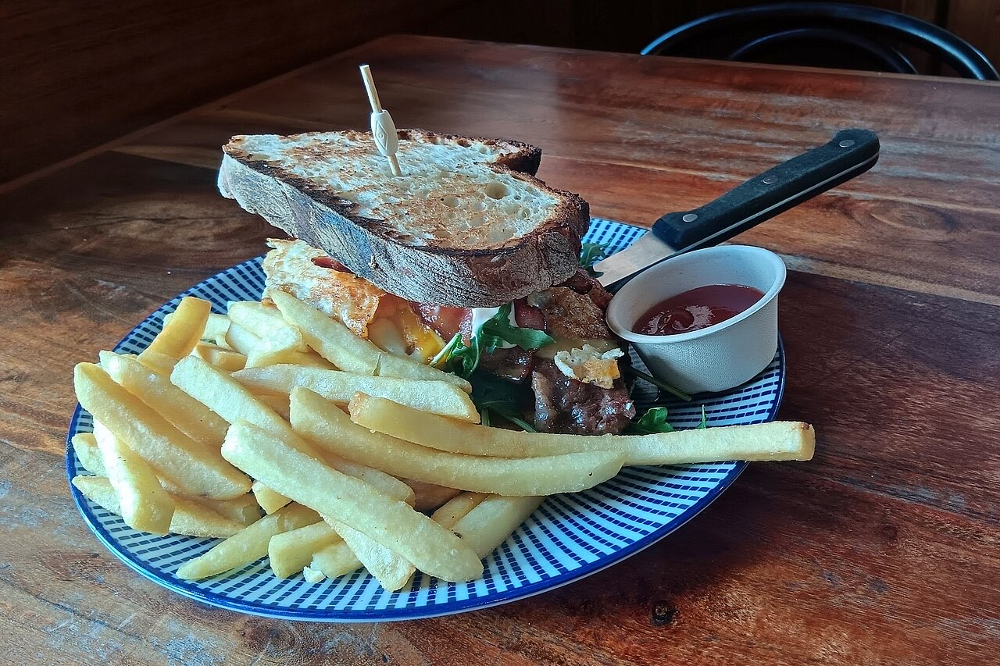
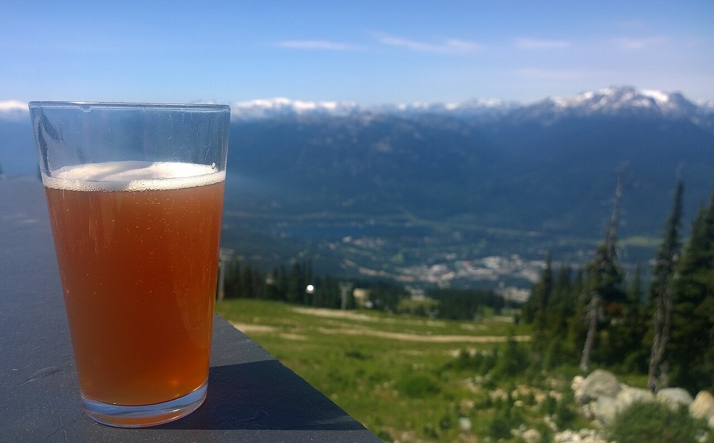

Bar / restaurante · Centro histórico
Um copo na Praça de São Tiago
Para um copo ao fim do dia ou para petiscar com amigos.
Praça de São Tiago, no coração do Património Mundial.
Contacto por WhatsApp ou telefone, e veja como chegar.
O Bar Cara & Coroa fica na Praça de São Tiago, no centro histórico de Guimarães, Património Mundial. Um bar-restaurante para petiscar e beber um copo com amigos.



Fotografias ilustrativas — no site final usamos as vossas.
Pedido de reserva
Escolha o dia e a hora — o pedido chega por WhatsApp e confirmamos logo.
↑ Assim chegaria a mensagem ao vosso WhatsApp. (Nesta demonstração nada é enviado.)
Onde estamos
Proposta para Bar Cara & Coroa
Esta página foi feita de propósito para Bar Cara & Coroa por João Machado, programador web aqui de Guimarães. Inclui:
Eu trato do alojamento e da manutenção. Sem compromisso.